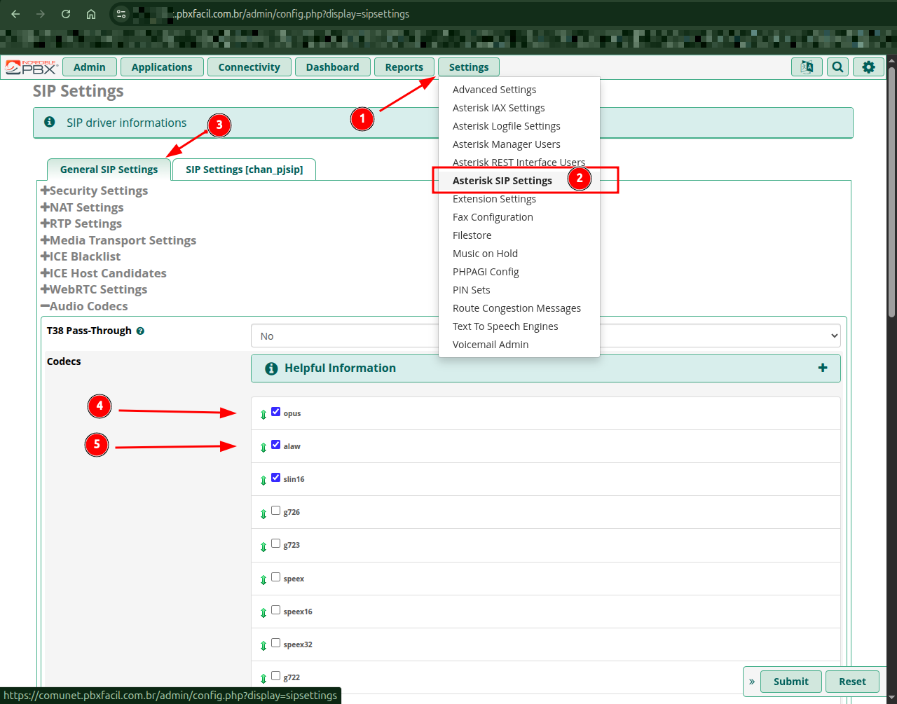

Guia Completo de Troncos SIP (Trunks)
Aprenda a configurar Troncos SIP convencionais de operadoras VoIP e o Tronco PJSIP seguro (TLS/SRTP) para números oficiais da WhatsApp Cloud API (Meta).

1. O que é um Tronco (Trunk)?
O Tronco SIP é o canal digital de comunicação que conecta o PABX Fácil (Asterisk) ao mundo externo. É através dos troncos que as chamadas originadas em telefones convencionais, celulares ou chamadas de voz via WhatsApp chegam até a sua central e que as ligações feitas pelos seus atendentes saem para os clientes.
2. Tipos de Troncos Suportados
- Tronco SIP Convencional (Operadora VoIP / PSTN): Utiliza autenticação por IP ou Usuário/Senha (SIP Registration), transportado via UDP/TCP padrão e codecs como G.711 (alaw/ulaw) ou G.729.
- Tronco WhatsApp Cloud API (Meta): Utiliza criptografia de mídia SRTP, transporte seguro TLSv1.2, autenticação de entrada via cabeçalho SIP e codec de alta fidelidade Opus.
3. Configuração Passo a Passo: Tronco WhatsApp Cloud API (Meta)
Esta configuração permite receber e realizar chamadas de voz oficiais do WhatsApp diretamente na plataforma.
Passo 1: Habilitar Telefonia no AtenderBem
No painel do AtenderBem, acesse Configurações › Filas. No número WhatsApp Cloud API Oficial, clique no botão "Configurar telefonia". O sistema exibirá o Servidor SIP gerado (com sufixo -direct) e a senha.
Passo 2: Instalar Certificado SSL Let's Encrypt no PABX

- No PABX, acesse
Admin › Certificate Management › + New Certificate › Generate Let's Encrypt Certificate. - No campo Certificate Host Name, insira exatamente o hostname fornecido pelo AtenderBem (com o sufixo
-direct). - Preencha o e-mail do administrador, selecione o país e clique em Generate.
- Acesse
Settings › Asterisk SIP Settings › SIP Settings (chan_pjsip). Na seção TLS/SSL, selecione o certificado criado e configure o SSL Method comotlsv1_2. - Na aba General SIP Settings, na seção Audio Codecs, marque a opção
opus.
Passo 3: Criar o Tronco PJSIP no FreePBX
Acesse Connectivity › Trunks › + Add Trunk › Add SIP (chan_pjsip) Trunk e preencha rigorosamente conforme a tabela abaixo:
| Aba do FreePBX | Parâmetro | Valor Obrigatório | Explicação Técnica |
|---|---|---|---|
| General | Trunk Name | 5511987654321 | Número do WhatsApp com DDI (55) + DDD (11) + Número (12 dígitos no total). |
| General | Outbound CallerID | 5511987654321 | Identificador que será enviado nas chamadas efetuadas. |
| pjsip Settings › General | Authentication | None | A Meta não utiliza autenticação SIP tradicional por REGISTER. |
| pjsip Settings › General | Registration | None | O canal opera via roteamento direto por IP/TLS. |
| pjsip Settings › General | SIP Server | wa.meta.vc | Servidor oficial de telefonia da Meta. |
| pjsip Settings › General | Context | from-pstn | Contexto padrão do Asterisk para entrada de chamadas externas. |
| pjsip Settings › General | Transport | 0.0.0.0-tls | Exige transporte seguro criptografado com o certificado instalado. |
| pjsip Settings › Advanced | Media Encryption | srtp | Criptografia obrigatória dos pacotes de áudio (RTP). |
| pjsip Settings › Advanced | Match Inbound Auth | Auth username | Identificação da chamada de entrada pelo cabeçalho de usuário. |
| pjsip Settings › Codecs | Codecs habilitados | Marcar opus e desmarcar incompatíveis | O WhatsApp utiliza áudio em banda larga com codec Opus. |
Passo 4: Verificação de Status
Após clicar em Submit e Apply Config, vá até Reports › Asterisk Info. Na seção Chan_PJSIP Registrations / Channels, o tronco recém-criado deve constar com status ONLINE.
4. Configuração de Tronco SIP Convencional (Operadora VoIP)
Para troncos fornecidos por operadoras como Vivo, Embratel, TotalVoice, Directcall ou provedores SIP locais:
| Parâmetro PJSIP | Valor Típico (Exemplo) | Descrição |
|---|---|---|
| Trunk Name | Tronco_Operadora_Principal | Nome de identificação interna. |
| Outbound CallerID | "Empresa" <1130902755> | Número do telefone fixo principal ou DDR. |
| Authentication | Outbound | Exige usuário e senha para discar. |
| Registration | Send | O PABX envia registro periódico para a operadora. |
| SIP Server | sip.operadora.com.br | Host ou IP fornecido pela operadora. |
| Username / Secret | usuario_sip / senha_forte | Credenciais fornecidas no contrato VoIP. |
| Codecs | alaw, ulaw, g729 | Codecs padrão da rede pública de telefonia. |
5. Diagnóstico de Troncos via Linha de Comando (CLI)
Execute no terminal SSH para verificar a saúde dos troncos:
# Verificar status de troncos PJSIP registrados:
asterisk -rx "pjsip show registrations"
# Listar todos os endpoints de troncos e ramais:
asterisk -rx "pjsip show endpoints"
# Testar se a porta TLS 5061 está escutando:
netstat -tulpn | grep 5061Comandos PJSIP complementares
Comandos adicionais do acervo para inspeção fina de troncos e ramais no mesmo terminal SSH:
| Comando | O que faz | Uso prático |
|---|---|---|
pjsip show contacts | Lista todos os contatos registrados. | Mostra quais endpoints estão registrados no momento. |
pjsip show endpoint <nome> | Mostra os detalhes de um endpoint específico. | Confere a configuração de um tronco ou ramal (ex.: pjsip show endpoint 2000). |
pjsip show transports | Lista os transportes configurados. | Mostra os transportes UDP/TCP/TLS ativos (ex.: o transporte 0.0.0.0-tls do tronco Meta). |
pjsip qualify endpoint <nome> | Envia um OPTIONS para verificar se o endpoint está online. | Testa se o tronco/ramal está acessível antes de abrir chamado. |
pjsip show channelstats | Mostra estatísticas de canais PJSIP. | Exibe métricas de qualidade como MOS, jitter e perda de pacotes de uma chamada em curso. |
pjsip set logger on / pjsip set logger off | Ativa/desativa o log de mensagens SIP no console. | Útil para depurar o handshake TLS/SRTP de um tronco (ativar, reproduzir a falha e desativar). |
6. Conceitos de SIP Trunking: SIP x VoIP, DDR e Canais SIP
Além da configuração prática, vale fixar os conceitos que explicam por que o Tronco SIP é a base da telefonia em nuvem usada pelo PABX Fácil.
SIP e VoIP não são a mesma coisa
VoIP (Voice over Internet Protocol) refere-se a qualquer chamada de voz feita pela internet. SIP (Session Initiation Protocol) é uma das tecnologias de protocolo que tornam o VoIP possível — é ele que cria as conexões em tempo real entre dois telefones. Ou seja, todo tronco SIP é VoIP, mas nem toda implantação de VoIP usa SIP.
Discagem Direta ao Ramal (DDR)
Com um serviço DDR, o provedor conecta o PABX da empresa a um bloco de números de telefone. Esses números virtuais ignoram a linha de recepção principal e vão diretamente para um ramal ou grupo de ramais. O número DDR identifica o telefone e o tronco SIP é o elo entre o telefone identificado e a internet, permitindo que a chamada seja encaminhada ao telefone correto. No PABX, esse número é o DID Number preenchido nas Rotas de Entrada.
Canais SIP e dimensionamento
Cada tronco contém vários canais SIP independentes. Um canal SIP equivale a uma linha telefônica — só que digital. Se a empresa costuma fazer 20 chamadas simultâneas, serão necessários 20 canais SIP. Dimensione a quantidade de canais do tronco conforme o volume de ligações simultâneas esperado.
Por que usar SIP Trunking
- Redução de custo: usa a conexão de internet ou rede IP em vez de linhas analógicas caras; ligações de longa distância tornam-se locais por trafegarem pela internet. Segundo o Gartner, a adoção pode reduzir os custos de telefonia em até 50%.
- Escalabilidade: adicionar ou remover usuários e largura de banda conforme o crescimento da empresa.
- Flexibilidade e mobilidade: as chamadas podem ser direcionadas ao celular ou a qualquer dispositivo com conexão à internet.
- Produtividade e comunicações unificadas: consolida voz e dados em uma única rede, caminho natural para uma plataforma de comunicação unificada (UCaaS).
7. NAT e Obtenção do IP Externo do PABX
O IP externo do PABX é o endereço usado para configurar telefones IP e aplicativos VoIP (como o MicroSIP) que acessam a central pela internet.
- Acesse o PABX e vá em
Settings › Asterisk SIP Settings. - Abra a aba General SIP Settings.
- Em NAT Settings, no campo External Address, clique no botão Detect Network Settings.
- O IP será atualizado automaticamente. Utilize o endereço obtido para configurar os acessos externos ao PABX.